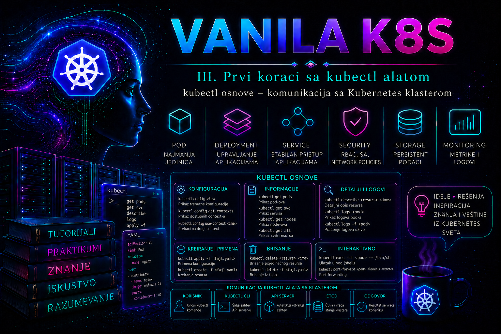

Vanilla Kubernetes

kubectl je standardni komandni alat kojim administrator, operater ili automatizovani proces komunicira sa Kubernetes API serverom. On ne pristupa direktno kontejnerima, čvorovima, bazi etcd niti pojedinačnim komponentama control plane-a. Svaka komanda se prevodi u odgovarajući zahtev prema Kubernetes API-ju, šalje izabranom API serveru, prolazi autentikaciju, autorizaciju i admission kontrole, a zatim dobija odgovor u strukturisanom obliku. Zbog toga rad sa kubectl alatom nije samo poznavanje sintakse komandne linije: administrator mora razumeti kontekst, namespace, identitet pod kojim radi, dozvoljene operacije, stanje resursa i posledice zahteva koji šalje klasteru.
U produkcionom okruženju kubectl je istovremeno alat za pregled stanja, dijagnostiku, kontrolisanu promenu, validaciju, audit i reagovanje na incidente. Pogrešno izabran kontekst, izostavljen namespace ili preširoka privilegija mogu pretvoriti tehnički ispravnu komandu u produkcioni incident. Zato svaka ozbiljna administratorska procedura počinje proverom identiteta i ciljnog klastera, nastavlja se procenom razlike između željenog i postojećeg stanja, a završava funkcionalnom proverom i dokumentovanjem rezultata.
Uloga kubectl alata u Kubernetes arhitekturi
Kada administrator izvrši komandu kao što je kubectl get pods, alat najpre učitava lokalnu konfiguraciju pristupa. Iz nje određuje adresu API servera, podatke za proveru identiteta servera, korisnički ili servisni identitet, aktivni context i podrazumevani namespace. Zatim otkriva dostupne API resurse i šalje HTTPS zahtev. API server proverava TLS vezu, autentifikuje klijenta, primenjuje RBAC ili drugi autorizacioni mehanizam i, kada je reč o promeni, prosleđuje zahtev kroz admission lanac. Tek nakon uspešnog završetka ovih koraka zahtev postaje deo željenog stanja klastera.
kubectl zato ne garantuje da je aplikacija zaista funkcionalna samo zato što je komanda prihvaćena. Uspešan odgovor na apply potvrđuje da je API server prihvatio i sačuvao deklaraciju, ali ne i da su Podovi raspoređeni, slike preuzete, probe uspešne, Service endpoint-i formirani ili aplikacija dostupna korisnicima. Kontroleri naknadno usklađuju stvarno stanje sa deklarisanim stanjem. Administrator mora posebno pratiti tok tog usklađivanja.
Alat podržava imperativni i deklarativni način rada. Imperativne komande, na primer kubectl create namespace ili kubectl scale deployment, korisne su za ograničene operativne zadatke, dijagnostiku i hitne intervencije. Deklarativni rad zasniva se na manifestima čuvanim u sistemu za kontrolu verzija i primeni komandom kubectl apply. U enterprise produkciji deklarativni model je pogodniji za ponovljivost, pregled promene, reviziju, automatizaciju i oporavak. Imperativna promena koja nije vraćena u izvorne manifeste stvara konfiguracioni drift i može biti poništena pri sledećem GitOps ili CI/CD izvršavanju.
Instalacija, verzija i preduslovi
kubectl postoji za Linux, macOS i Windows. Binarni fajl treba preuzimati iz zvaničnih Kubernetes kanala ili pouzdanog repozitorijuma operativnog sistema, uz proveru kontrolne sume kada se instalira ručno. Administrator ne treba da preuzima nepoznate kopije binarnog fajla niti da ga pokreće sa nepotrebnim administratorskim pravima. Instalacija alata sama po sebi ne daje pristup klasteru; potreban je odgovarajući kubeconfig, mrežna dostupnost API endpoint-a, pouzdan CA sertifikat i važeći autentikacioni mehanizam.
Zvanična Kubernetes politika podržava kubectl koji je najviše jednu minor verziju stariji ili noviji od verzije kube-apiserver komponente. U HA klasteru sa privremenom razlikom verzija među API serverima dozvoljeni opseg može biti uži, jer klijent mora biti kompatibilan sa svakim API serverom do kog ga load balancer može usmeriti. Dodatni alati za distribuciju klastera mogu imati stroža pravila, pa se pre nadogradnje proveravaju i vendorska ograničenja.
kubectl version --client
kubectl version
kubectl cluster-info
Prva komanda prikazuje samo lokalnu verziju klijenta i korisna je pre uspostavljanja veze. Druga pokušava da pročita i verziju servera, pa istovremeno proverava osnovnu komunikaciju. kubectl cluster-info prikazuje dostupne control plane i servisne endpoint-e. Neuspeh može ukazivati na pogrešan context, DNS problem, firewall, proxy, nevažeći sertifikat, istekle kredencijale ili nedostupnost API servera. Poruka o nedozvoljenoj operaciji, nasuprot mrežnom timeout-u, potvrđuje da je mrežna putanja verovatno funkcionalna, ali da identitet nema odgovarajuće pravo.
Kubeconfig, context i bezbedan izbor klastera
kubeconfig organizuje podatke o klasterima, identitetima i context-ima. Context povezuje jedan cluster zapis, jedan user zapis i podrazumevani namespace. Podrazumevana lokacija je ~/.kube/config, ali se može koristiti eksplicitni parametar --kubeconfig ili promenljiva KUBECONFIG. Kada je naveden --kubeconfig, koristi se samo taj fajl. Kada je postavljena promenljiva KUBECONFIG, više fajlova može biti objedinjeno prema pravilima platforme.
Kubeconfig nije bezazlen tekstualni inventar endpoint-a. Pored sertifikata, tokena i putanja do lokalnih fajlova, može sadržati exec autentikacioni dodatak koji pokreće lokalnu komandu radi pribavljanja kredencijala. Zato se kubeconfig iz nepoznatog izvora ne prosleđuje direktno alatu kubectl; najpre se pregleda kao skripta i proveravaju se naročito polja users[].user.exec, reference na datoteke i adrese servera. Posebno izrađen zlonamerni fajl može dovesti do izvršavanja koda ili izlaganja lokalnih podataka.
kubectl config get-contexts
kubectl config current-context
kubectl config view --minify
kubectl config get-clusters
get-contexts prikazuje sve poznate context-e, dok current-context vraća trenutno aktivan. config view --minify ograničava prikaz na aktivnu kombinaciju klastera, korisnika i context-a. Izlaz može sadržati osetljive strukturne podatke, a opcija --raw može otkriti ugrađene sertifikate ili tokene i zato se ne koristi u tiketima, deljenim terminalima ili nezaštićenim logovima.
Pre svake produkcione promene administrator eksplicitno proverava context i namespace. Bezbednije je navesti --context i --namespace u rizičnoj komandi nego osloniti se na staru terminalsku sesiju. Promena aktivnog context-a obavlja se kontrolisano:
kubectl config use-context lab-admin
kubectl config set-context --current --namespace=team-platform
kubectl config current-context
kubectl config view --minify --output 'jsonpath={..namespace}{"\n"}'
Poslednja komanda potvrđuje podrazumevani namespace. Ako nije definisan, Kubernetes koristi default. Namespace nije samo organizaciona oznaka: on utiče na vidljivost objekata, RBAC, kvote, mrežne politike i mesto na kom se izvršava promena. Parametar -A ili --all-namespaces koristi se za pregled više namespace-ova, ali ne zamenjuje pravilno određivanje cilja za operacije promene.
Kubeconfig mora imati restriktivne dozvole i ne sme biti skladišten u javnom repozitorijumu, deljen putem nezaštićene elektronske pošte ili ugrađen u sliku kontejnera. Na Linux sistemu uobičajena lokalna zaštita je:
chmod 700 "${HOME}/.kube"
chmod 600 "${HOME}/.kube/config"
Kopiranje /etc/kubernetes/admin.conf sa control plane čvora na korisničke računare predstavlja ozbiljan rizik jer taj fajl u kubeadm okruženju tipično daje veoma široka administrativna prava. Za redovan rad treba izdati poseban identitet sa najmanjim potrebnim privilegijama i kontrolisanim rokom važenja.
Sintaksa komandi i otkrivanje API resursa
Opšti oblik komande je kubectl [command] [TYPE] [NAME] [flags]. Command određuje operaciju, TYPE vrstu API resursa, NAME konkretan objekat, a flags menjaju opseg ili format. Resurs se može zadati punim nazivom, kratkim nazivom ili u obliku type/name. Kratice ubrzavaju interaktivni rad, ali u procedurama i skriptama puni nazivi povećavaju čitljivost.
kubectl api-resources
kubectl api-resources --namespaced=true
kubectl api-resources --namespaced=false
kubectl api-versions
kubectl explain deployment
kubectl explain deployment.spec.template.spec.containers --recursive
api-resources prikazuje resurse koje trenutni API server oglašava, njihove API grupe, kratice, namespaced svojstvo i podržane glagole. To je pouzdanije od pretpostavke da svaki klaster ima iste CRD resurse. api-versions prikazuje dostupne API grupe i verzije. kubectl explain čita OpenAPI šemu sa servera i objašnjava strukturu polja, pa administrator proverava manifest prema stvarnoj verziji klastera, a ne prema primeru pronađenom za drugu verziju.
Pregled resursa i tumačenje stanja
kubectl get služi za strukturisan pregled jednog ili više resursa. Bez dodatnog izlaznog formata prikazuje sažetu tabelu, ali ta tabela ne sadrži sva polja objekta. Opcija -o wide dodaje korisne informacije, dok -o yaml i -o json prikazuju potpunu serversku reprezentaciju, uključujući status i polja koja je server podrazumevano dopunio.
kubectl get namespaces
kubectl get deployments,pods,services -n team-platform
kubectl get pods -n team-platform -o wide
kubectl get deployment web-demo -n team-platform -o yaml
kubectl get pods -n team-platform -l app=web-demo
kubectl get pods -n team-platform --field-selector=status.phase=Running
Label selektori pronalaze objekte prema poslovnim i tehničkim oznakama, dok field selektori koriste ograničen skup podržanih polja. Administrator treba da izbegava parsiranje vizuelne tabele alatima kao što su grep i awk kada su dostupni JSONPath, Go template ili JSON izlaz. Tabelarni format je namenjen čoveku i može se promeniti.
kubectl get pods -n team-platform \
-o custom-columns='NAME:.metadata.name,PHASE:.status.phase,NODE:.spec.nodeName,IMAGE:.spec.containers[*].image'
kubectl get deployment web-demo -n team-platform \
-o jsonpath='{.status.readyReplicas}{" ready of "}{.spec.replicas}{" desired\n"}'
Polje status.phase=Running nije dovoljno za zaključak da je Pod spreman da prima saobraćaj. Potrebno je proveriti Ready uslov, restartovanja, probe i endpoint-e Service objekta. Slično tome, postojanje Deployment objekta ne potvrđuje uspešan rollout. Normalno stanje se utvrđuje kombinovanjem deklarisanog broja replika, dostupnih replika, stanja Podova, događaja i funkcionalnog testa.
Za praćenje promene bez ponavljanja komande može se koristiti --watch, ali dugotrajan watch zauzima vezu prema API serveru i nije zamena za monitoring. U interaktivnoj dijagnostici treba ograničiti trajanje i obim zahteva, na primer komandom kubectl get pods -n team-platform -l app=web-demo --watch --request-timeout=60s. Za skripte se koriste strukturisani izlazi i proveravaju izlazni kodovi; odsustvo vrednosti u JSONPath rezultatu nije isto što i dokaz zdravog stanja.
Describe, events i logovi
kubectl describe daje administratorski pregled objekta, povezanih stanja i događaja. Posebno je koristan za Podove koji čekaju raspoređivanje, ne mogu da preuzmu sliku, padaju na probe ili ne mogu da montiraju volumen. Ipak, izlaz nije stabilan mašinski interfejs i ne treba ga parsirati u automatizaciji.
kubectl describe deployment web-demo -n team-platform
kubectl describe pod POD_NAME -n team-platform
kubectl events -n team-platform --types=Warning
kubectl events -n team-platform --for deployment/web-demo
Događaji ukazuju na operativne uzroke kao što su FailedScheduling, FailedMount, ErrImagePull ili neuspešne probe. Oni imaju ograničeno vreme zadržavanja i nisu zamena za centralizovani logging i audit sistem. Komanda kubectl events može ograničiti prikaz na namespace, tip događaja ili konkretan resurs.
kubectl logs POD_NAME -n team-platform
kubectl logs POD_NAME -n team-platform -c web
kubectl logs POD_NAME -n team-platform -c web --since=15m
kubectl logs POD_NAME -n team-platform -c web --previous
kubectl logs -f POD_NAME -n team-platform -c web
Kod Podova sa više kontejnera navodi se -c. Opcija --previous čita log prethodne instance kontejnera i naročito je važna kod CrashLoopBackOff stanja. -f prati novi izlaz, ali se prekida nakon prikupljanja dovoljnog uzorka. Veliki neograničeni log zahtevi opterećuju API putanju i terminal administratora; zato se koriste --since, --tail i centralizovana platforma za dugoročnu analizu. kubectl logs čita log kontejnera dostupan preko kubelet-a i nije zamena za control plane, systemd, container runtime ili audit logove.
Autorizacija i granice administratorskih prava
Pre promene administrator proverava da li identitet ima baš potrebnu operaciju. Komanda kubectl auth can-i šalje autorizacioni upit i vraća yes ili no. Kubernetes API glagoli, kao što su get, list, watch, create, patch, update i delete, nisu isto što i nazivi komandi, ali predstavljaju operacije koje autorizacija procenjuje.
kubectl auth can-i get pods -n team-platform
kubectl auth can-i create deployments.apps -n team-platform
kubectl auth can-i patch deployments.apps/web-demo -n team-platform
kubectl auth can-i delete namespaces
kubectl auth can-i --list -n team-platform
Negativan rezultat nije greška koju treba zaobići preuzimanjem administratorskog kubeconfig-a. On znači da zahtev mora biti usklađen sa dodeljenom odgovornošću ili eskaliran vlasniku RBAC politike. Opcija --as za impersonation korisna je administratorima koji već imaju posebno pravo impersonacije; ona sama ne omogućava preuzimanje tuđeg identiteta.
Bezbedna promena i validacija manifesta
Pre stvarne promene manifest se sintaksno i serverski proverava. Client-side dry-run obrađuje sadržaj lokalno, dok server-side dry-run šalje zahtev API serveru bez trajnog čuvanja, pa može obuhvatiti serversko podrazumevanje, autorizaciju, validaciju i admission pravila koja podržavaju dry-run. Za produkcionu procenu korisniji je server-side režim.
kubectl apply --dry-run=server -f web-demo.yaml
kubectl diff -f web-demo.yaml
kubectl apply -f web-demo.yaml
kubectl rollout status deployment/web-demo -n team-platform --timeout=120s
kubectl diff prikazuje razliku između postojećeg online stanja i rezultata koji bi nastao primenom manifesta. Izlaz je YAML, a izlazni kod može označavati da razlika postoji, što u automatizaciji ne treba pogrešno tumačiti kao tehnički kvar. apply kreira objekat ako ne postoji ili usklađuje postojeći sa konfiguracijom. Posle primene obavezno se prati rollout i proverava funkcija aplikacije.
Komande edit, patch, set image i scale mogu biti opravdane u incidentu, ali menjaju live stanje izvan deklarativnog izvora. Svaka takva promena mora biti odmah evidentirana i preneta u repozitorijum ili vraćena nakon intervencije. Komanda delete je destruktivna i zahteva eksplicitnu proveru context-a, namespace-a, vrste objekta i kontrolera koji će eventualno ponovo napraviti objekat.
Integrisani praktikum: bezbedna primena i provera testne web aplikacije
Poslovni i tehnički kontekst. Platform tim treba da potvrdi da novi administrator može bezbedno da pristupi klasteru, proveri svoja prava, primeni deklarativnu aplikaciju u namenskom namespace-u, dijagnostikuje neuspešan rollout i izvrši kontrolisan rollback. Vežba se radi na laboratorijskom context-u lab-admin, u namespace-u team-platform. Produkcioni context se ne koristi.
Cilj i referentno okruženje. Potrebno je implementirati Deployment web-demo sa dva NGINX Poda i interni Service web-demo. Administrator koristi Linux radnu stanicu, kubectl kompatibilan sa API serverom i postojeći kubeconfig koji sadrži context lab-admin. Manifesti će se čuvati u direktorijumu ${HOME}/k8s-labs/lesson-11.
Preduslovi i prava pristupa. API endpoint mora biti mrežno dostupan, CA lanac pouzdan, a kredencijali važeći. Identitet mora imati get, list i watch za relevantne objekte i događaje, kao i create, patch, update i delete za Deployment i Service u namespace-u team-platform. Kreiranje namespace-a zahteva cluster-scoped pravo; ako ono nije odobreno, namespace prethodno priprema ovlašćeni cluster administrator.
-
Proveriti lokalni alat, context i komunikaciju.
Pre bilo kakve promene potvrđuju se klijent, aktivni cilj i dostupnost API servera.
Validacija: aktivni context mora biti tačnokubectl version --client kubectl config get-contexts kubectl config use-context lab-admin kubectl config current-context kubectl cluster-infolab-admin, acluster-infomora vratiti adresu control plane-a bez TLS ili mrežne greške. Razlika klijenta i servera mora ostati unutar podržanog opsega. -
Proveriti identitet i minimalna prava.
Administrator prvo proverava pristup namespace-u i potrebne operacije, umesto da grešku otkriva usred promene.
Validacija: svaka operacija potrebna za vežbu treba da vratikubectl auth can-i get pods -n team-platform kubectl auth can-i create deployments.apps -n team-platform kubectl auth can-i patch deployments.apps -n team-platform kubectl auth can-i create services -n team-platform kubectl auth can-i delete deployments.apps -n team-platformyes. Rezultatnodokumentuje se i eskalira vlasniku RBAC politike; ne koristi se drugi privilegovaniji kubeconfig bez odobrenja. -
Proveriti namespace ili ga kontrolisano napraviti.
Najpre se proverava postojanje. Kreiranje se izvršava samo ako identitet ima odobreno cluster-scoped pravo.
Ako server vratikubectl get namespace team-platformNotFound, ovlašćeni administrator može izvršiti:
Validacija:kubectl auth can-i create namespaces kubectl create namespace team-platform kubectl label namespace team-platform purpose=training owner=platform-team
Status mora bitikubectl get namespace team-platform --show-labelsActive, a oznakepurpose=trainingiowner=platform-teamvidljive. -
Pripremiti radni direktorijum i manifest.
Svi objekti se definišu u jednom doslednom fajlu koji može biti pregledan i verzionisan.
Validacija: fajl mora postojati i sadržati oba dokumenta.mkdir -p "${HOME}/k8s-labs/lesson-11" cd "${HOME}/k8s-labs/lesson-11" cat > web-demo.yaml <<'EOF' apiVersion: apps/v1 kind: Deployment metadata: name: web-demo namespace: team-platform labels: app: web-demo spec: replicas: 2 selector: matchLabels: app: web-demo template: metadata: labels: app: web-demo spec: containers: - name: web image: nginx:1.27-alpine ports: - name: http containerPort: 80 readinessProbe: httpGet: path: / port: http initialDelaySeconds: 2 periodSeconds: 5 resources: requests: cpu: 25m memory: 32Mi limits: cpu: 200m memory: 128Mi --- apiVersion: v1 kind: Service metadata: name: web-demo namespace: team-platform labels: app: web-demo spec: selector: app: web-demo ports: - name: http port: 80 targetPort: http type: ClusterIP EOF
Očekuju se linijetest -s web-demo.yaml && grep -E '^kind: (Deployment|Service)$' web-demo.yamlkind: Deploymentikind: Service. -
Izvršiti serversku probu i pregled razlike.
Ovaj korak otkriva nedozvoljena polja, RBAC problem i deo admission ograničenja bez trajne promene.
Validacija: dry-run mora prikazati da bi Deployment i Service bili kreirani ili konfigurisani. Kod komandekubectl apply --dry-run=server -f web-demo.yaml kubectl diff -f web-demo.yaml; rc=$? test "$rc" -eq 0 -o "$rc" -eq 1diff, izlazni kod0znači da razlike nema,1da razlika postoji, dok vrednost veća od1označava grešku koju treba istražiti. -
Primeniti konfiguraciju i pratiti rollout.
Tek nakon uspešne provere manifest se upisuje u klaster.
Validacija:kubectl apply -f web-demo.yaml kubectl rollout status deployment/web-demo \ -n team-platform \ --timeout=120sapplymora prijaviti oba objekta, a rollout mora završiti porukom da je Deployment uspešno razvijen. Timeout nije dokaz konačnog kvara, već signal za pregled Podova i događaja. -
Proveriti stvarno stanje i mrežno povezivanje.
Deployment, Podovi, Service i endpoint-i moraju biti međusobno usklađeni.
Validacija: Deployment treba da pokaže dve željene i dve dostupne replike, oba Poda treba da budukubectl get deployment web-demo -n team-platform kubectl get pods -n team-platform -l app=web-demo -o wide kubectl get service web-demo -n team-platform kubectl get endpointslice -n team-platform \ -l kubernetes.io/service-name=web-demoRunningi1/1 Ready, a EndpointSlice mora sadržati adrese spremnih Podova. Service bez endpoint-a obično ukazuje na neusaglašene label selektore ili nespremne Podove. -
Izvršiti završni funkcionalni test.
Port-forward se koristi samo kao privremeni administratorski tunel za testiranje, ne kao produkcioni način izlaganja aplikacije.
Validacija:kubectl port-forward \ -n team-platform \ service/web-demo 18080:80 >/tmp/web-demo-port-forward.log 2>&1 & PF_PID=$! sleep 3 curl --fail --silent --show-error http://127.0.0.1:18080/ \ | head kill "${PF_PID}"curlmora završiti izlaznim kodom0i vratiti početak NGINX HTML stranice. Ako tunel ne radi, proverava se/tmp/web-demo-port-forward.log, postojanje endpoint-a i lokalna zauzetost porta 18080. -
Sprovesti negativni test neispravne slike.
Namerno se postavlja nepostojeći tag kako bi administrator razlikovao prihvaćenu API promenu od neuspešne realizacije.
Validacija i dijagnostika:cp web-demo.yaml web-demo-good.yaml sed 's/nginx:1.27-alpine/nginx:1.27-alpine-not-found/' \ web-demo-good.yaml > web-demo-broken.yaml kubectl apply --dry-run=server -f web-demo-broken.yaml kubectl apply -f web-demo-broken.yaml kubectl rollout status deployment/web-demo \ -n team-platform \ --timeout=45s || true
Očekuje se novi Pod u stanjukubectl get pods -n team-platform -l app=web-demo kubectl describe deployment web-demo -n team-platform kubectl events -n team-platform --types=Warning kubectl get pods -n team-platform -l app=web-demo \ -o custom-columns='NAME:.metadata.name,WAITING:.status.containerStatuses[*].state.waiting.reason,IMAGE:.spec.containers[*].image'ErrImagePulliliImagePullBackOff, dok stara ReplicaSet može nastaviti da pruža dostupne replike u skladu sa rolling-update strategijom. Filter--for deployment/web-demoovde nije dovoljan, jer je događaj neuspešnog preuzimanja slike vezan za novi Pod, a ne neposredno za Deployment. Serverski dry-run prolazi jer je naziv slike sintaksno dozvoljen; nemogućnost preuzimanja slike otkriva se tek na čvoru. Relevantni tragovi su Pod events, kubelet log na pogođenom čvoru i log container runtime-a. Za systemd čvorove ovlašćeni node administrator koristijournalctl -u kubelet --since "15 minutes ago"i odgovarajući runtime servis u istom vremenskom prozoru. Obični namespace administrator možda nema pristup čvoru i tada prilaže događaje pri eskalaciji. -
Vratiti poslednju ispravnu konfiguraciju.
Pošto je izvorni manifest sačuvan, najčistiji povratak je ponovna deklarativna primena odobrenog fajla.
Validacija:kubectl apply -f web-demo-good.yaml kubectl rollout status deployment/web-demo \ -n team-platform \ --timeout=120s kubectl rollout history deployment/web-demo -n team-platform
Aktivna slika mora ponovo bitikubectl get deployment web-demo -n team-platform \ -o jsonpath='{.spec.template.spec.containers[0].image}{"\n"}' kubectl get pods -n team-platform -l app=web-demo kubectl events -n team-platform --for deployment/web-demonginx:1.27-alpine, a dve replike dostupne. Alternativa za podržane rollout resurse jekubectl rollout undo, ali u okruženju u kom je Git ili drugi repozitorijum izvor istine rollback treba uskladiti i sa deklarativnim izvorom, inače će naredna automatizacija ponovo primeniti lošu verziju. -
Izvršiti cleanup laboratorijskih objekata.
Ovo je destruktivna operacija i ne izvršava se dok context, namespace i sadržaj manifesta nisu ponovo provereni.
Validacija:kubectl config current-context kubectl diff -f web-demo-good.yaml || true kubectl delete -f web-demo-good.yaml kubectl wait --for=delete deployment/web-demo \ -n team-platform \ --timeout=120s kubectl wait --for=delete service/web-demo \ -n team-platform \ --timeout=60s
Očekuje se porukakubectl get deployment,service,pods \ -n team-platform \ -l app=web-demoNo resources found. Namespace se ne briše jer može sadržati druge timske objekte. Brisanje celog namespace-a dozvoljeno je samo kada je potvrđeno da je namenski, prazan i obuhvaćen odobrenom procedurom.
Merljivi kriterijumi prihvatanja. Aktivni context je potvrđen kao lab-admin; sve potrebne RBAC provere daju očekivani odgovor; serverski dry-run prolazi bez greške; inicijalni Deployment dostiže 2/2 dostupne replike u roku od 120 sekundi; Service ima najmanje dva spremna endpoint-a; HTTP test vraća uspešan odgovor; negativni test proizvodi prepoznatljiv ErrImagePull ili ImagePullBackOff; povratak vraća odobrenu sliku i dve dostupne replike; cleanup uklanja samo objekte označene sa app=web-demo.
Administratorske prakse
- Provera context-a i namespace-a pre svake promene. Izvršavaju se
kubectl config current-contextikubectl config view --minifyneposredno preapply,patch,scale,rolloutilideleteoperacije. Svako odstupanje od odobrenog klastera ili namespace-a zaustavlja promenu. U change tiketu beleže se context, namespace, vreme i operator. Uspeh se meri odsustvom promena izvedenih u pogrešnom okruženju. - Kontrola verzijske kompatibilnosti. Posle nadogradnje radne stanice ili klastera proveravaju se
kubectl version --clienti serverska verzija. Razlika izvan jednog minor izdanja ili strožeg vendorskog pravila zahteva instaliranje podržane verzije pre nastavka administracije. Verzija alata dokumentuje se u operativnom standardu i zapisu promene. - Periodična kontrola kredencijala i kubeconfig fajlova. Najmanje kvartalno, kao i nakon promene uloge, odlaska zaposlenog ili bezbednosnog incidenta, pregledaju se vlasništvo fajla, lokalne dozvole, rokovi važenja sertifikata i nepotrebni context-i. Reakcija na izloženi token ili privatni ključ je trenutno opozivanje ili rotacija, a ne samo brisanje lokalne kopije. Incident, vreme opoziva i obuhvaćeni identiteti beleže se u bezbednosnom sistemu.
- Provera prava pre automatizacije. Pre puštanja skripte ili pipeline-a koristi se
kubectl auth can-iza svaku planiranu API operaciju i ciljni namespace. Dodela wildcard prava ilicluster-adminuloge samo radi uklanjanja greške nije prihvatljiva. Uspeh se meri time da proces završava sa namenskim identitetom i najmanjim dovoljnim skupom prava. - Serverski dry-run, diff i rollout validacija. Pre svake deklarativne produkcione promene izvršavaju se
kubectl apply --dry-run=serverikubectl diff; nakon odobrenja prate serollout status, status replika, events i funkcionalna proba. Neočekivano brisanje polja, promena selektora, smanjenje replika ili promena sigurnosnog konteksta zaustavlja change. Diff i rezultat validacije čuvaju se uz tiket ili pipeline artefakte. - Praćenje Warning događaja i restartovanja. Nakon deploy-a, promene noda ili incidenta proveravaju se
kubectl events --types=Warning, broj restartovanja i status workload-a. PonavljajućiFailedScheduling,FailedMount,BackOffili neuspešne probe zahtevaju reakciju pre zatvaranja promene. Prva reakcija je određivanje pogođenog objekta i vremena, zatimdescribe, ograničeni logovi i provera zavisnosti. - Čuvanje deklarativnog izvora, a ne kubectl izlaza kao jedinog backupa. Manifesti, Helm vrednosti, Kustomize konfiguracije, RBAC definicije i pipeline deklaracije čuvaju se u kontrolisanom repozitorijumu sa istorijom i pregledom izmena.
kubectl get -o yamlmože pomoći pri dijagnostici, ali serverski izlaz sadrži dinamička polja i nije zamena za projektovani izvor. Backup samog stanja klastera, uključujućietcd, pripada proceduri platformskog oporavka. Probni restore se periodično izvodi u izolovanom okruženju; uspeh potvrđuju čitljiv snapshot, obnovljeni API objekti i funkcionalna validacija reprezentativnih workload-a. - Centralizovani audit i logging.
kubectllokalno ne predstavlja potpun audit trag. Produkcioni klaster treba da koristi API audit politiku i centralizovano čuvanje audit zapisa, aplikacionih logova i relevantnih čvorskih logova. Nakon incidenta porede se korisnički identitet, API glagol, resurs, namespace, odgovor servera i vreme. Uspeh se meri mogućnošću da se odobrena promena ili incident rekonstruišu bez oslanjanja na sećanje operatora.
Završna kontrolna tačka
- Potvrđen je izlaz
kubectl versioni verzijska razlika je u podržanom opsegu. kubectl config current-contextprikazuje tačno odobreni klaster.- Ciljni namespace je eksplicitno naveden ili potvrđen komandom
config view --minify. kubectl auth can-ipotvrđuje samo prava potrebna za planiranu operaciju.- Kubeconfig ima restriktivne dozvole i u zapis promene nisu kopirani tokeni, ključevi ili sirovi sertifikati.
- Manifest je prošao
kubectl apply --dry-run=serverbez greške. kubectl diffne pokazuje neočekivano brisanje ili promenu kritičnih polja.- Posle primene potvrđeni su rollout, željene i dostupne replike, Ready stanje i Service endpoint-i.
- Warning događaji i ograničeni logovi pregledani su za period promene.
- Izvršena je funkcionalna proba aplikacije, a rezultat je zabeležen u tiketu ili pipeline-u.
- Rollback procedura i poslednja odobrena konfiguracija postoje pre produkcione promene.
- Imperativne hitne izmene prenete su u deklarativni izvor ili kontrolisano uklonjene.
Zaključak
Administrator koji pravilno koristi kubectl razume da komandna linija predstavlja klijenta Kubernetes API-ja, a ne direktan pristup internim komponentama klastera. On ume da utvrdi koji klaster, identitet i namespace koristi, da otkrije resurse i njihovu šemu, da razlikuje deklarisano stanje od stvarnog operativnog rezultata i da tumači izlaze komandi get, describe, events i logs u zajedničkom kontekstu.
Praktična kompetencija podrazumeva da administrator može da pripremi manifest, proveri ga server-side dry-run postupkom, pregleda razliku, primeni promenu, prati rollout i potvrdi funkciju servisa. Podjednako je važno da ume da prepozna scenario u kom API prihvata objekat, ali kubelet ne može da realizuje njegovu specifikaciju, kao što je nepostojeća slika. Bez tog razlikovanja lako se pogrešno zaključuje da je uspešan apply isto što i uspešna implementacija.
Produkcioni rizici najčešće nastaju zbog pogrešnog context-a, neodređenog namespace-a, preširokih privilegija, nezaštićenog kubeconfig-a, neproverenog manifesta i live promene koja nije vraćena u deklarativni izvor. Granica kubectl alata je jasna: on može poslati, pročitati i pratiti API zahteve, ali ne zamenjuje kontrolu pristupa, change management, GitOps, centralizovani monitoring, audit, backup platforme niti funkcionalno testiranje aplikacije.
Nakon ove lekcije administrator treba da ume da izvrši bezbednu osnovnu implementaciju, potvrdi njeno stanje, pronađe događaje i logove, sprovede negativni test, izvrši rollback i dokumentuje promenu. Mrežni nedostupni API endpoint, nepoznat CA, istekli identitet, nedostajuće RBAC pravo, admission odbijanje, čvorski ili runtime problem i promena izvan odobrenog opsega predstavljaju razloge za zaustavljanje procedure i eskalaciju odgovarajućem vlasniku. Granica ovlašćenja nije prepreka koju treba zaobići, već sastavni deo odgovorne administracije.